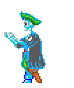

about me
My full name is Alexandru Popa, I'm 18 years old. I was born in Bucharest, Romania and I'm pretty tall too. Might have mentioned this before but I love creating different things. Of course, this comes with the process of learning, but I love that even more. Just think it's really nice to have a bunch of hobbies that let you grow. Here's some pics of me:
passions and interests
I think it's safe to say coding is my greatest passion. When I was a kid my dad sat me at his computer and showed me how to do all sorts of stuff. Mostly play things. Including Monkey Island 2 which I believe had a big part in adapting my tastes today (basically look at this whole site :P). Being a fairly shy kid, I spent more and more time on computers. At some point dad showed me Scratch, and encouraged me mess around with it. I did and I loved it. I started getting more accustomed to coding and wanted more and more. Eventually, I picked up a real coding language and started to learn basic algorithms and concepts. Years later, here I am.
My main interest is machine learning and neural networks. I saw a vid once where a dude made an a.i. that played Super Mario World. Except it didn't just play, it learned how to play. I started seeing more and more vids like that and that's it, I wanted to do it. So recently (around summer of 2019) I started learning. It's a fascinating topic for me.
Other than coding, I love creating in general. I enjoy making up worlds and stories, and I usually draw or even write from time to time. I really enjoy drawing and I'm getting pretty good at it. I may set up a gallery of some stuff I'm really proud, in the near future. My final passion is cooking. I adore cooking because it's such a different way to express yourself through flavors, textures, colors. Plus seeing someone's smile after taking a bite of something you cooked is golden.
CONTACT
Come say hi! I've a bunch of platforms where you can do that.
Something I use as a blog/diary/anthology
It's fairly old but has a special place in my heart
I write here from time to time
<<< go back